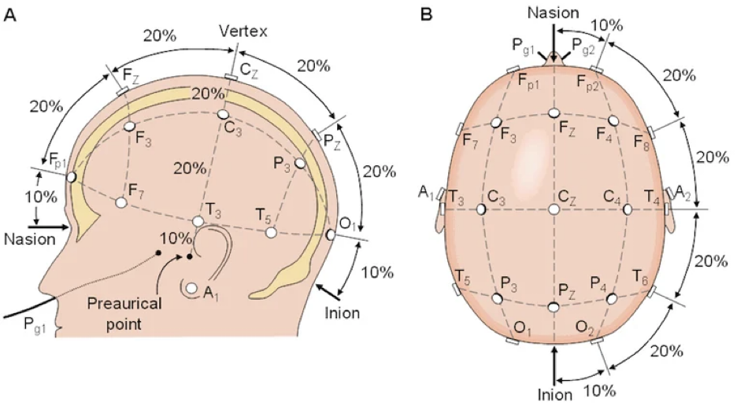
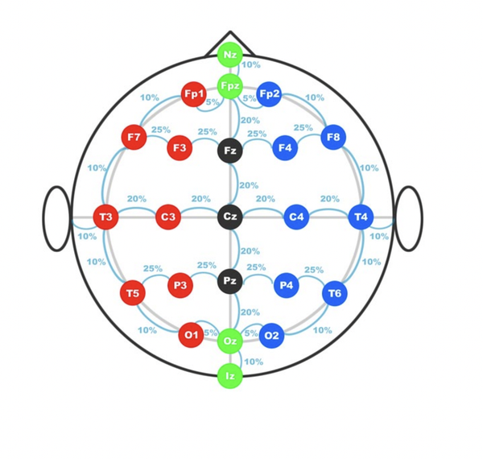

L'EEG enregistre les différences de potentiel électrique à la surface du scalp, générées par la sommation des potentiels post-synaptiques des neurones pyramidaux corticaux. Amplitudes faibles (5 à 100 µV), à l'échelle de la milliseconde à la seconde.
Trois choses à reconnaître pour lire un EEG :
| Terme | Définition | Unité |
|---|---|---|
| Fréquence (f) | Nombre de cycles par seconde | Hz (cycle/s) |
| Période (T) | Durée d'un cycle — inverse de la fréquence | s ou ms · T = 1/f |
| Amplitude | Hauteur du tracé pic-à-pic (différence de potentiel) | µV (microvolt) |
| Puissance | Énergie portée par un rythme — proportionnelle au carré de l'amplitude | µV² (ou µV²/Hz en densité spectrale) |
| Phase | Position dans le cycle (avance/retard entre 2 ondes) | radian (0 à 2π) ou degré (0 à 360°) |
| Terme | Définition | Valeurs usuelles |
|---|---|---|
| Intensité (I) | Courant constant délivré pendant chaque impulsion | 800 – 900 mA |
| Pulse width (pw) — largeur d'impulsion | Durée d'une impulsion électrique unitaire | UPP 0,25 – 0,5 ms · BP 0,5 – 1,5 ms |
| Fréquence (f) | Nombre de paires d'impulsions par seconde | 20 – 120 Hz (souvent 30 – 70) |
| Durée du train (t) | Durée totale d'application du stimulus | 1 – 8 s |
| Charge totale (Q) | Quantité totale d'électricité délivrée — paramètre principal de la « dose » | 30 – 500 mC selon protocole |
Q (mC) = I (mA) × pw (ms) × f (Hz) × 2 × t (s) ÷ 1000
Exemple : 800 mA × 0,5 ms × 50 Hz × 2 × 4 s ÷ 1000 = 160 mC.
| Bande | Fréquence | Quand on la voit | Interprétation |
|---|---|---|---|
| Alpha (α) | 8 – 13 Hz | Région postérieure, yeux fermés, éveil détendu. Bloquée à l'ouverture des yeux. | normal chez l'adulte. Référence majeure pré-ECT. |
| Beta (β) | 14 – 30 Hz | Frontal, parfois diffus. Faible amplitude. | normal en faible quantité. abondant sous BZD, barbituriques, certains anesthésiques. |
| Gamma (γ) | > 30 Hz | Faible amplitude au scalp (< 5 µV), oscillations brèves. | recherche — cognition, conscience. Ne pas confondre avec EMG : l'EMG est ample et désorganisé, le gamma est faible et organisé. |
| Theta (θ) | 4 – 7 Hz | Temporal en somnolence, normal chez l'enfant et l'ado jeune. | tolérable en quantité modérée chez l'adulte. pathologique si abondant ou focal. |
| Delta (δ) | < 4 Hz | Sommeil profond ; jeune enfant éveillé. | toujours pathologique chez l'adulte éveillé. Encéphalopathie, lésion focale, post-critique, post-ECT précoce. |
| Terme | Définition | Exemple |
|---|---|---|
| Sporadique | Apparition isolée, sans périodicité | Pointe occasionnelle |
| Rythmique | Oscillations régulières à fréquence stable, morphologie répétée | Rythme alpha postérieur |
| Périodique | Décharges récurrentes à intervalles fixes (0,5 – 3 s) avec retour au calme entre chaque | PLEDs, GPDs (cf. fiche ICU EEG) |
| Terme | Définition | Quand le repérer |
|---|---|---|
| Recrutement | Augmentation progressive de l'amplitude et/ou de la fréquence | Début d'une crise tonico-clonique généralisée |
| Atténuation | Diminution focale ou diffuse de l'amplitude | Lésion sous-jacente, phase post-critique |
| Suppression | Disparition complète, tracé plat (< 10 µV) | Coma profond, anesthésie, mort cérébrale |
| Terme | Définition |
|---|---|
| Focal | Limité à une région anatomique (ex. T3-T5 gauche) |
| Multifocal | Plusieurs foyers indépendants, distincts en localisation |
| Généralisé | Visible sur l'ensemble des dérivations simultanément |
| Bilatéral synchrone | Droite et gauche en miroir, simultané, sans prédominance |
| Latéralisé | Asymétrie nette D vs G (un côté domine clairement) |

Repérage 10-20 — distances de 10 % et 20 % de la circonférence crânienne mesurées depuis le Nasion, l'Inion et les points préauriculaires. Le nom "10-20" vient de ces deux pourcentages.

Vue de dessus — gauche en rouge, droite en bleu, ligne médiane en noir (Fz, Cz, Pz). Les paires comme F7-T3-T5 (chaîne temporale gauche) servent de base aux montages bipolaires.
| Bipolaire | Référentiel | |
|---|---|---|
| Principe | Différence entre 2 électrodes adjacentes | Chaque électrode vs une référence commune |
| Force | Localiser un foyer (phase reversal) | Amplitude absolue, comparaison hémisphères |
| Faiblesse | Activité diffuse mal vue (peut s'annuler) | Sensible aux artefacts de la référence |
| Quand l'utiliser | Foyer suspecté, spike focal | Activité diffuse, asymétrie, post-ECT |
| Réglage | Valeur usuelle | But | Piège |
|---|---|---|---|
| LF (passe-haut) | 0,5 – 1 Hz | Éliminer dérive lente, sueur, mouvement de fond | Trop élevé (>1 Hz) → masque l'activité delta pathologique |
| HF (passe-bas) | 70 Hz | Éliminer artefact musculaire (EMG) | Trop bas (<30 Hz) → rabote les spikes et les pointes rapides |
| Notch | 50 Hz (Europe), 60 Hz (US) | Éliminer interférence secteur | Peut masquer une activité épileptiforme rapide proche de 50 Hz — désactiver si environnement propre |
| Sensibilité | 7 µV/mm (10 µV/mm aussi courant) | Calibration verticale | Trop faible → tracé écrasé, anomalies invisibles |
| Vitesse | 30 mm/s | Calibration horizontale standard | 60 mm/s utile pour analyser une crise au ralenti |
| Artefact | Aspect typique | Comment le reconnaître | Solution |
|---|---|---|---|
| Musculaire (EMG) | Bouffées très rapides (20-200 Hz), aspect "hérissé" | Régions temporales / frontales ; disparaît si patient détendu | Détendre le patient, réduire le HF si transitoire |
| ECG | Déflexion régulière à la fréquence cardiaque | Souvent sur les électrodes basses (auriculaires, T6) | Dérivation ECG synchrone pour comparer ; éviter les références d'oreille |
| Mouvement oculaire / blink | Déflexion frontale (Fp1/Fp2) lente, ample, symétrique | Synchronisée à la fermeture/ouverture des yeux | Dérivation EOG synchrone ; demander de fixer un point |
| Sueur | Dérive très lente (< 0,5 Hz), grande amplitude | Souvent sur électrodes frontales ou basse résistance | Sécher la peau, vérifier le gel, augmenter LF si transitoire |
| Mauvais contact d'électrode | Plage isolée, anomalie sur une seule électrode | L'anomalie ne suit pas la logique anatomique du montage | Vérifier impédance < 5 kΩ, refaire le contact |
| Pulse | Déflexion régulière à la fréquence cardiaque | Une seule électrode posée près d'une artère | Déplacer légèrement l'électrode |
| Secteur 50 Hz | Bouffées fines régulières à 50 Hz | Aspect très uniforme, monotone | Notch filter, vérifier mise à la terre |
Les patterns détaillés sont décrits dans les fiches Status epilepticus, ICU EEG et Activité épileptiforme.